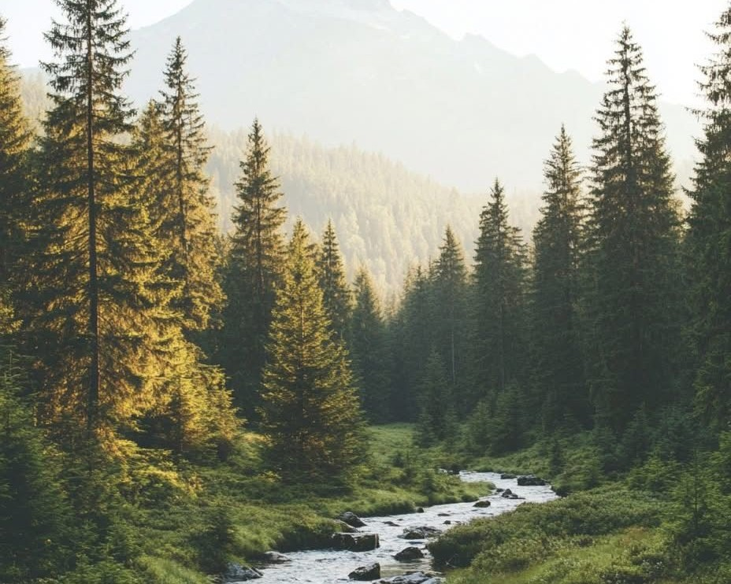
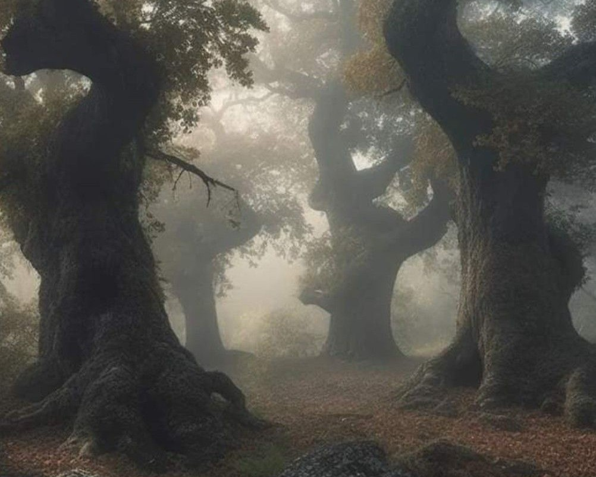
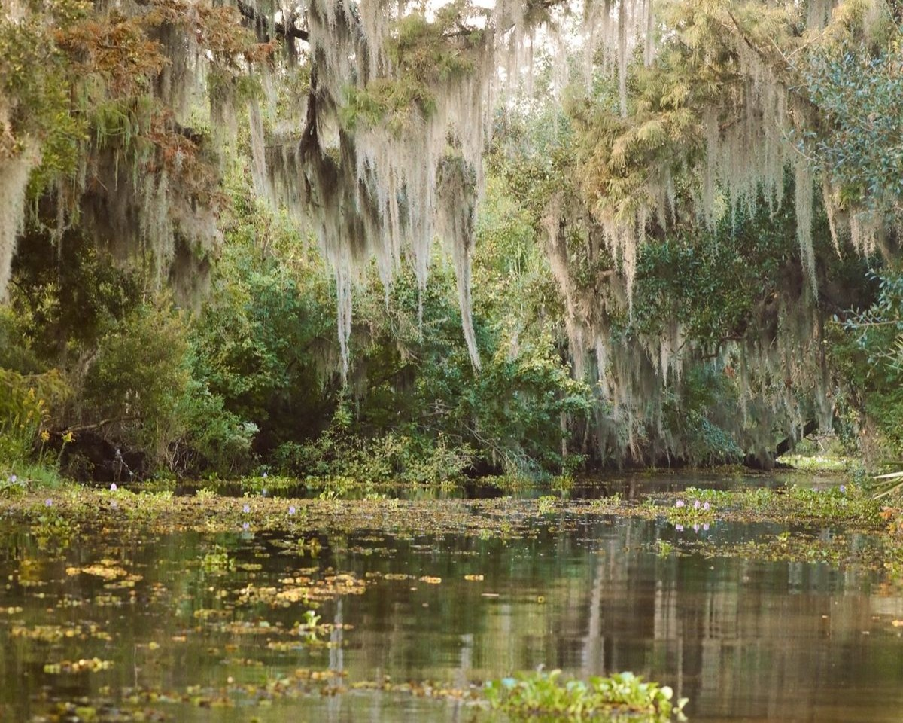
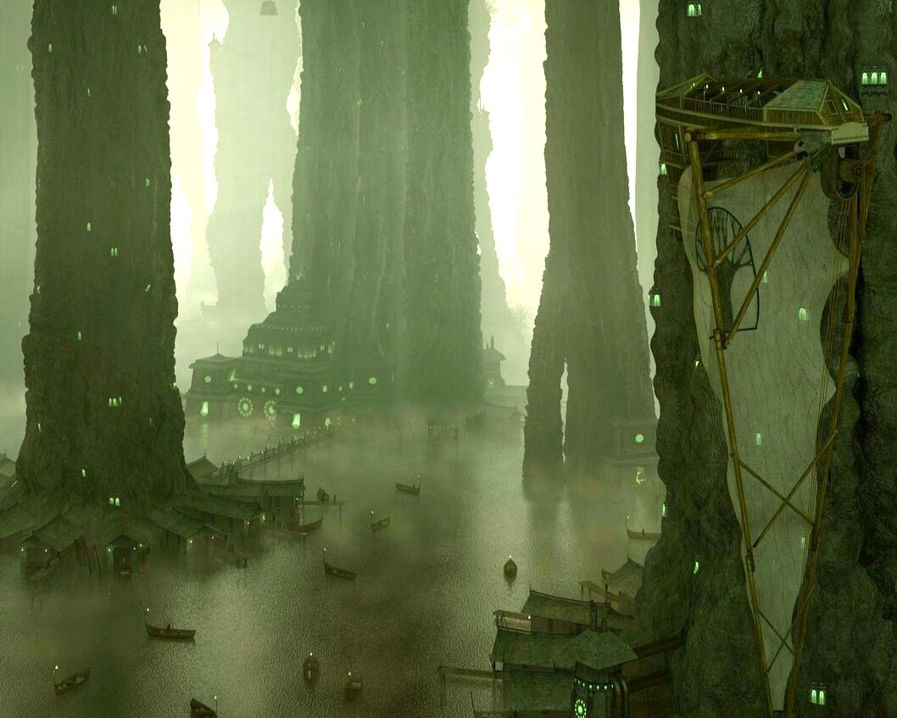
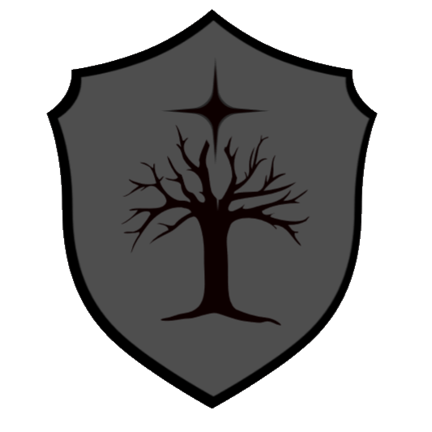
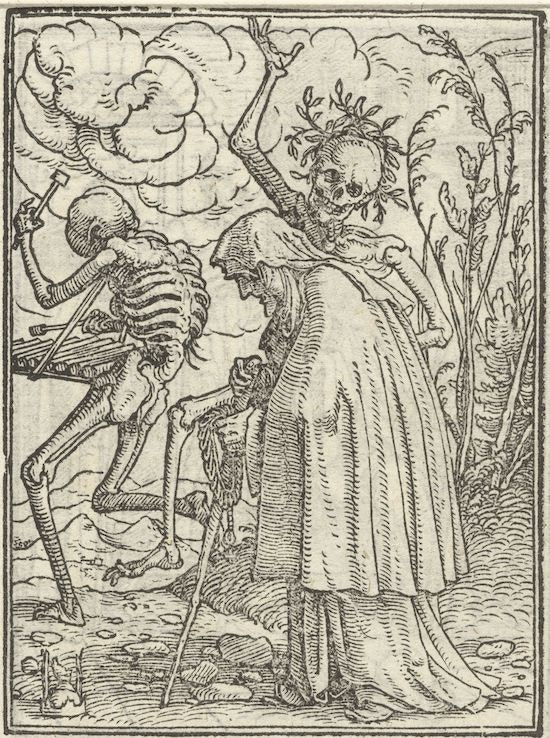

KINEMORE
Kinemore is the Northern half of the Arkmorian Empire. It is governed directly by three noble families, but serves as an extension of the Empire.
Kinemore is home to large forests and cold climates. As such, it and many of its citizens maintain a strong connection to the natural world. Many empire nobility and ambassadors have made Kinemore their home, and all nobility or upper classes maintain some connection to the Empire. Other citizens of the nation are frequently naturalists of some sort, who make their living by working with the land.
Geography
The Sunwood
|
 The Sunwood |
|---|
The Sunwood is an expansive forest to the East of the Altai Mountains. It is thought to have been blessed by the God of the Sun, Belenus, and is home to the seat of the Foxe family.
Noxcairn
Vexmoor
Altai Mountains
The Altai Mountains are the second tallest mountain range in Astren. Located in the North, they split Kinemore into Eastern and Western Halves.
Baccahagen
Voxvale
|
 The Whispering Wood |
|---|
Whispering Woods
The Whispering Woods is the name for the forest which occupies the Western half of Kinemore, divided by the Altai Mountains. It is rumoured to be a cursed and haunted forest, and travelers are frequently warned away from them after sundown.
Governance
The Whispering Wood is presided over by the Dubois family, from their seat in Aetherworth, along the Western coast. The Dubois are a powerful noble family within Kinemore, but remain deferential to the Empire-appointed heads of the nation. As with the other noble families of the region, they are the Woods' primary form of governance, responsible for the laws, education and economy of the area. The Dubois family are seen as the highest power in the Whispering Woods, and second only to the Foxe family in the rest of Kinemore.
Aetherworth
|
 Swamp Clearing outside Omene |
|---|
Grey Glades
The Grey Glades are a large mystical swamp which occupies the Southern region of Kinemore. It is purported to amplify natural and some divine magics, and as such is a popular destination for those casters.
Governance
To ensure the magical nature of the Glade is preserved, the region has an elected council known as the Wardens of the Glade. These Wardens work with Kinemorian nobility and the Empire to ensure the Glade is treated fairly and respectfully. They also work within the region as small more local form of governance.
|
 Cypress Docks near Passis. |
|---|
Settlement
Because the Glades are almost entirely covered by water, the ground is not
stable enough to support much construction. As a result, any
constructions in the Glades are built on stilts, forming a new foundation,
or using the impressive Red Cypress trees.
Most houses and other buildings
are constructed as treehouses, and frequently connected via rope, or other
hanging, bridges. These buildings can be accessed via ladder or staircase
from docks frequently found at the base of these trees. Some smaller communities and inhabitants
of the Glades construct their homes or businesses on boats. These boats travel
through the swamp, and have no fixed location.
Navigation through
the Glades can be somewhat difficult, as the only true road is the
Drakensberg Passage, connecting Infina, Omene and Baccahagen. This
Passage was shaped by druids when the Empire first established itself
in Kinemore, and is the simplest, and only easy, method for transporting
large vehicles or animals through the swamp. Beyond the passage, stilted walkways
are constructed for short distances, but the most common form of
intra-swamp navigation is over water. This is
generally accomplished with various rafts or canoes, which are found
commonly across the Glades. Common routes between larger communities are generally
marked via banner or other signifier in the trees, creating a kind of path.
Cities
Infina
Serebourne
Salisneau Expanse
To be written.
Periedge
Dawnstead
Governance
Arkmorian Empire
The Arkmorian Empire encompasses the nations of Arkmore and Kinemore, in the West of Astren. Established
after the end of the Great Wars, it intended to unify the previously war-torn nations of the continent.
The seat of the Empire is located in Arkmore, and as such, most of its business takes place there. Despite this,
Kinemore remains significant as a member of the Empire.
The Houses of Kinemore rule over the nation with the Empire's blessing, and maintain a strong relationship
with the ruling classes of Arkmore. Kinemore is subject to all laws of the Empire, pays a percentage of its
taxes to Imperator Villari, and provides soldiers and
other troops to its standing army. Representatives from Kinemore's noble houses and the Glade Wardens are
consulted during discussions concerning the whole of the Empire, and are not infrequently invited
to the capitol, Damvik, to provide their contributions in person. Kinemore also receives the guarantee of the
Empire's protection. The Arkmorian Empire has an impressive standing army as well as its highly-trained
Imperial Guard. Should Kinemore come under threat, they are entitled to these protections from
the Empire.
Read More.
Wardens of the Glade
The Wardens of the Glade are an elected council which serve as a small local form of governance. It is currently composed of seven members, but there is no rule enforcing this number. The current councillors are Eutropia Archon, Alton Hart, Andromeda Stoneguard, Merric Brightstone, Wendolyn Greyhorne, Wren Samandar, and Zinnia Hale. Their primary responsibilities are to serve their local communities, using their magic or other abilities to help with farming, construction and other needs. They are also the main adjudicators in the case of conflict, responsible for determing the guilty party and any consequence, if necessary. They meet all together somewhat frequently, to discuss the state of each of their locales, and to offer or request any kind of assistance. Less frequently, they will join the noble houses of Kinemore to represent the Glades in discussions with the Empire.
Noble Houses
| House Name | Crest | Description |
Foxe |
The Foxe family are the rulers of Kinemore, though they are only directly responsible for
the regions just East and South of the Altai Mountains. This includes the Sunwood, the Grey Glades
as well as much of the Altai range. The House Seat is located in Baccahagen,
the nation's capitol and largest city.
|
|
Dubois |
 |
The Dubois family are the rulers of the regions of Kinemore West of the Altai Mountains.
This includes the Whispering Wood and a small arctic region in the North. The House Seat
is located in Aetherworth, the region's largest city.
|
Dietrich |
The Dietrich family are the rulers of the far Northern regions of Kinemore, composed almost entirely
of the cold tundra known as the Salisneau Expanse.
The House Seat is located in Periedge, the region's largest city.
|

Character Creation
To be written.
| ORIGIN | CLASSES |
|---|---|
| IMPERIAL GUARD |
|
| IMPERIAL SOLDIERS |
|
| THIEVES' GUILD |
|
| SPECIES | ORIGINS |
|---|---|
| HUMAN | Humans are quite common and can be found throughout Kinemore. |
| WOOD ELF | Wood Elf is one of the most common elf variants in Kinemore, and can be found across the region, though they are more prominent in the Whispering Wood, Sunwood or Grey Glades. |
| HALF-ELF | Half-elves are quite common and can be found throughout Kinemore. |
| ELADRIN, FIRBOLG, CENTAUR | Eladrin are the rarest of all elven variants in Kinemore, due to their extra-planar origins. Firbolg and Centaurs are also quite rare in the whole of Astren, because of their fey origins. These peoples are generally found only in the Grey Glades where there is a stronger connections to the Feywild. |
| TABAXI | Tabaxi are uncommon in Kinemore, and Astren as a whole. They are generally found in the Grey Glades, but can also be found in either the Whispering Wood or Sunwood. |
| GOLIATH | Goliaths are uncommon in Kinemore, but can generally be found in the Salisneau Expanse, as it is an ancestral home to the Giants. |
Map